Cactus
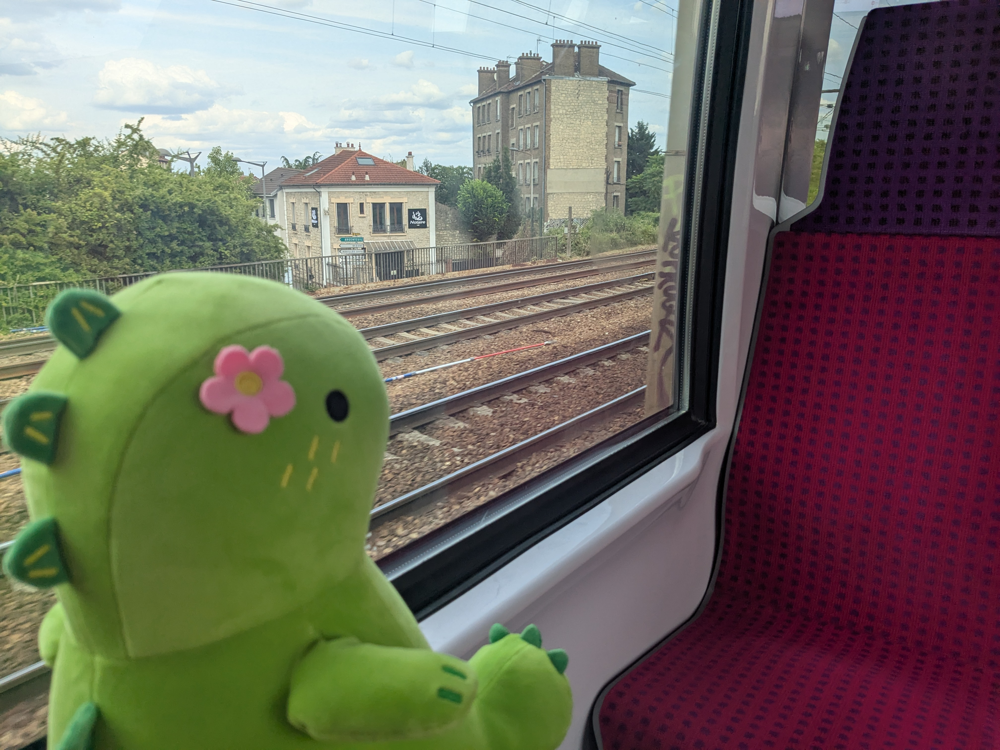
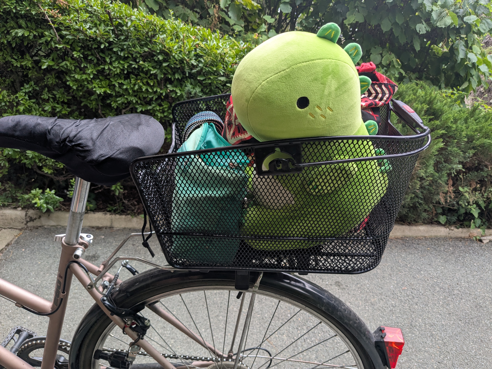
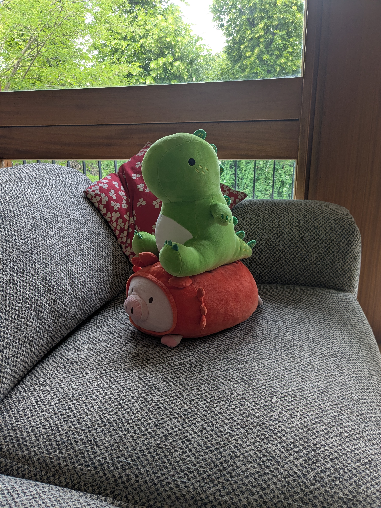
Dragon vert tout mignon que j’ai eu pour mes 20 ans grâce à une amie de la fac: MOMO. Il est tout moelleux et part souvent en voyage avec moi : il a déjà pris le métro, le vélo et même le TGV !
Surimi
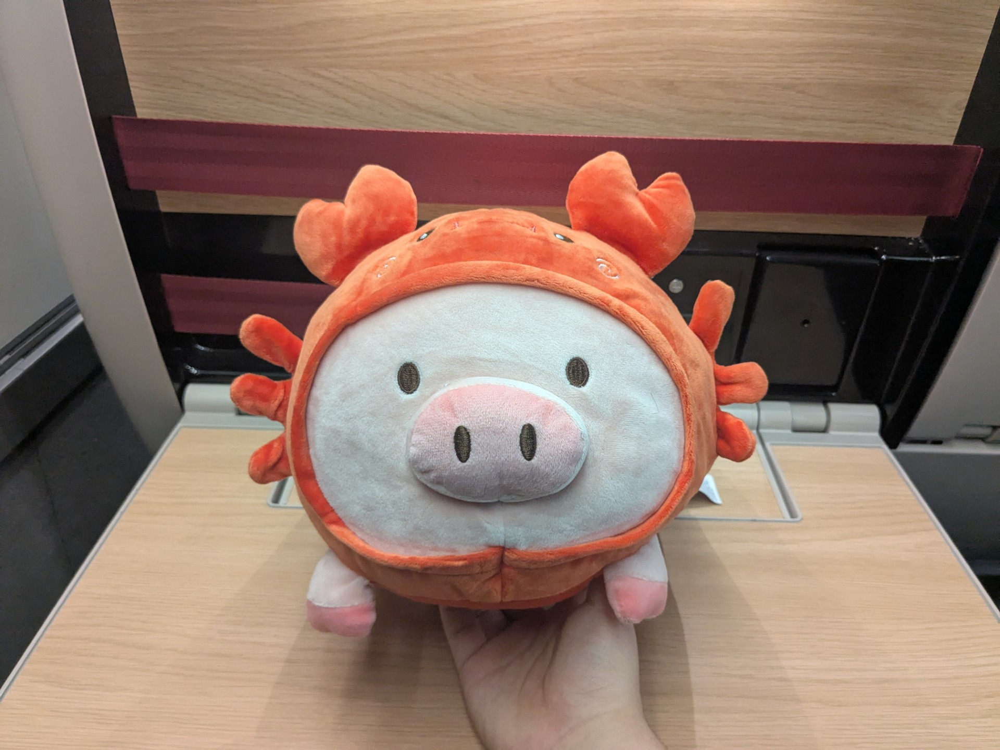
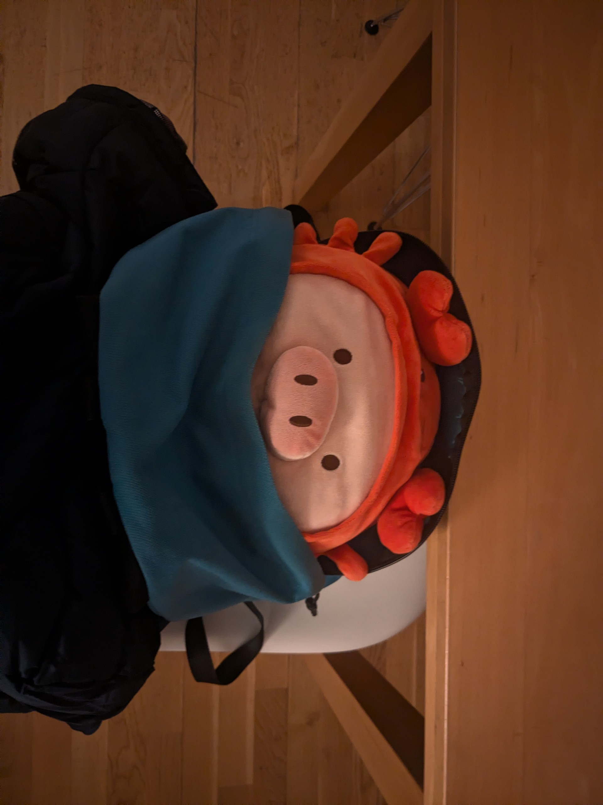
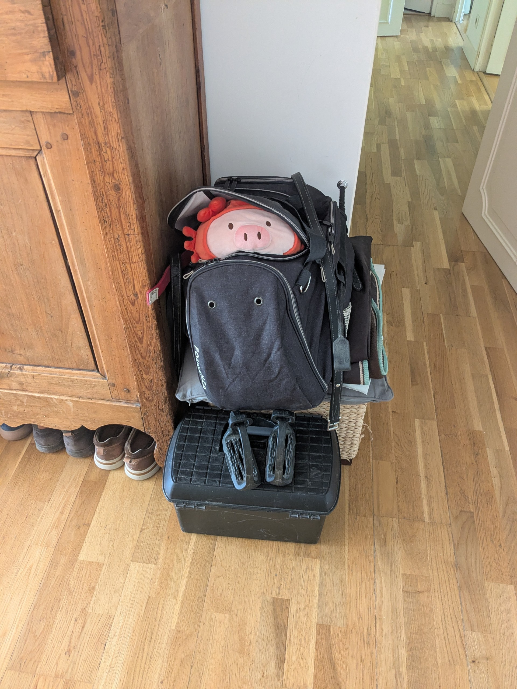
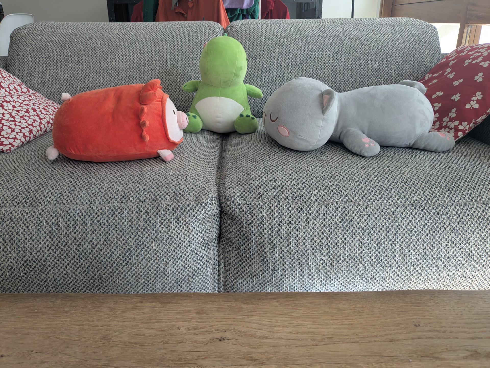
C’est un petit cochon dans un déguisement de crabe. Il vient directement de Londres et adore se cacher un peu partout dans la maison.
Gros Chat
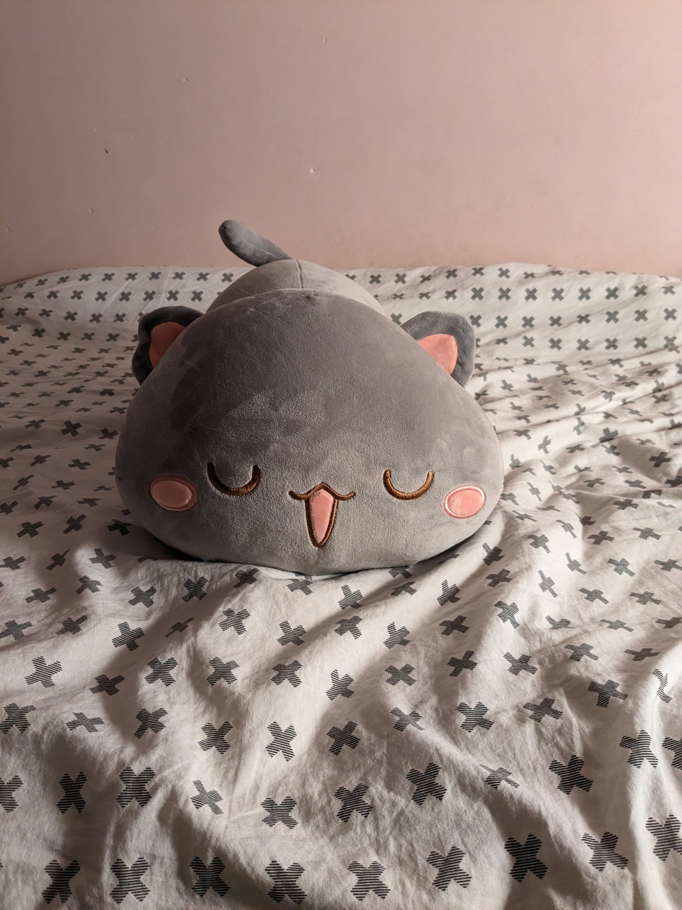
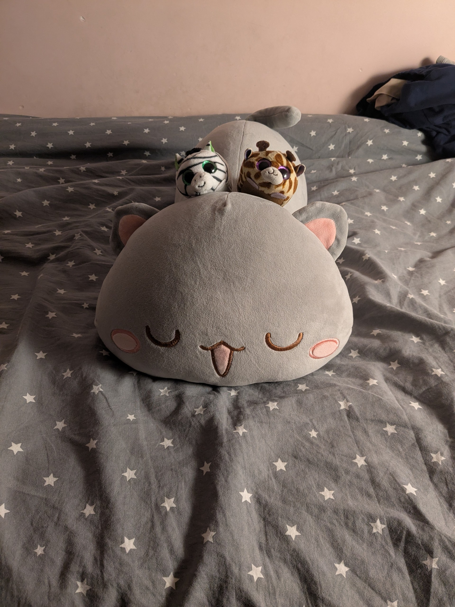
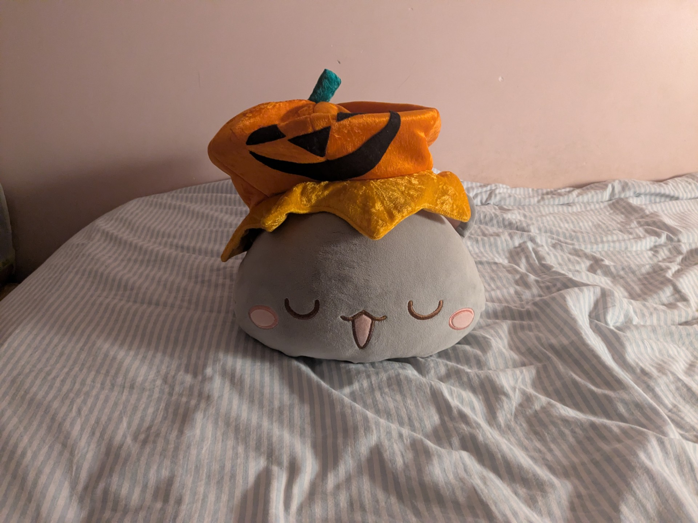
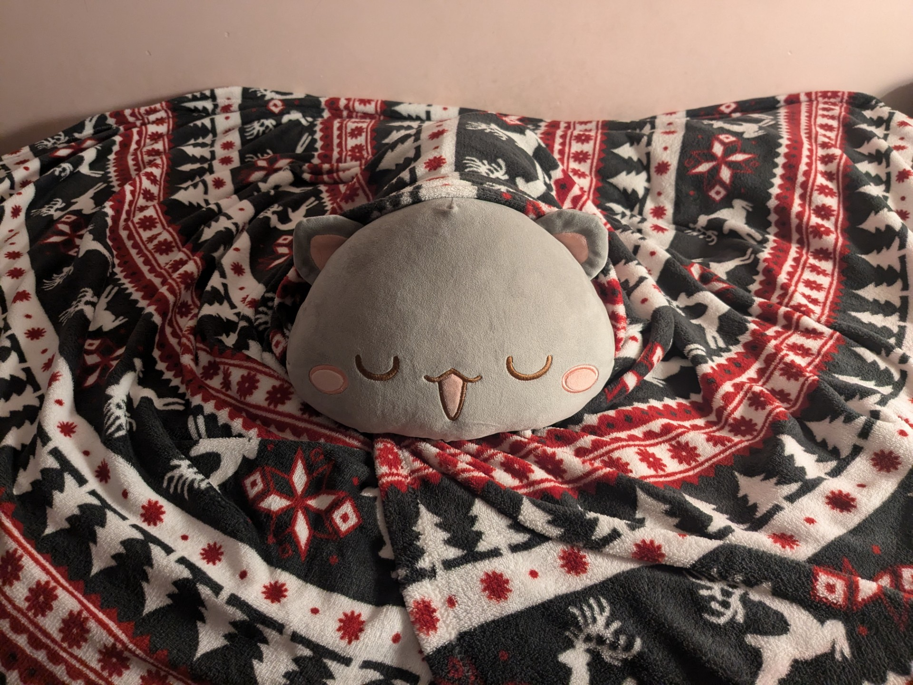
C’est ma plus grosse peluche ! Il part souvent en vacances avec moi et passe son temps à conspirer avec les autres peluches.
Le Dieu Courge
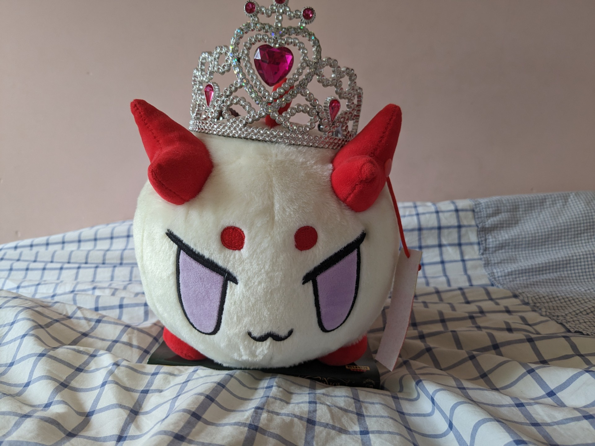
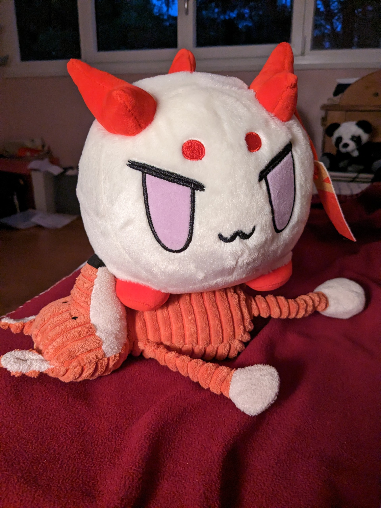
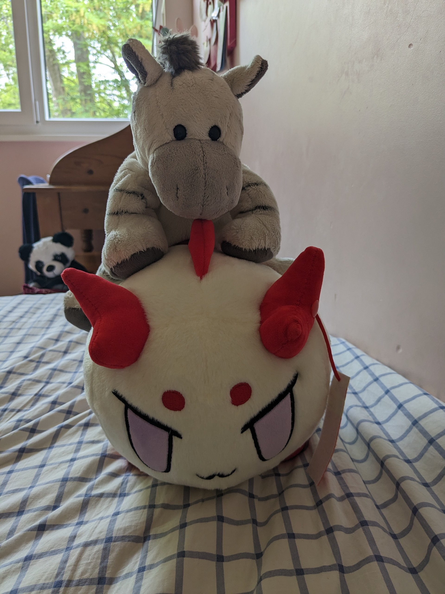
C’est la peluche de mon frère, elle est issue d’un jeu vidéo. Il se déguise souvent et adore jouer avec les autres peluches.